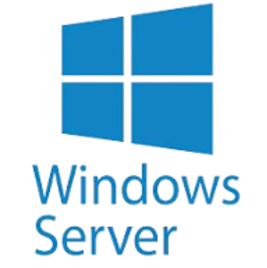

SARRERA
Ikasgai honetan, Windows Server instalatu eta konfiguratu dugu, diskoak eta RAID egiturak kudeatu eta datuak babesteko segurtasun kopiak prestatu ditugu. Horrez gain, erabiltzaileak eta taldeak sortu, baimenak konfiguratu, pasahitzen segurtasun-politikak ezarri eta web zerbitzaria martxan jarri dugu.

KUOTAK
Kuotek erabiltzaileen edo karpeten biltegiratze-espazioa mugatzen dute. Bi mota daude:
NTFS: Bolumen osoari aplikatzen zaio. Gure kasuan, 100 GB-ko muga eta 85 GB-ra iristean abisua ezarri dugu.
FSRM: Karpetei aplikatzen zaie. Giza Baliabideak, Kontabilitatea eta Orokorra karpetek 5 GB dituzte; Zuzendaritzak 15 GB, eta zuzendari bakoitzaren karpetak 5 GB.
SEGURTASUN KOPIAK
Segurtasun-kopiak (backup-ak) egitea ezinbesteko neurria da edozein enpresatan. Gaur egun, informazioa da erakunde baten aktibo garrantzitsuenetako bat. Zibereraso baten aurrean (adibidez, ransomware-a), giza akats baten ondorioz, sistema-hutsegite bategatik edo hondamendi natural bategatik datuak galtzeak ondorio kritikoak izan ditzake (lan-geldialdiak, galerak ekonomikoak edo enpresaren izen onaren kaltea). Segurtasun-kopiak egitearen helburu nagusia negozioaren jarraitutasuna bermatzea da, edozein intzidentzia gertatuta ere datuak berreskuratu ahal izateko.
9.5 3-2-1 ARAUA
Datuen segurtasun osoa bermatze aldera, industrian estandarra den 3-2-1 segurtasun-araua aplikatuko dugu:
3 kopia gutxienez: Datuen 3 kopia izatea (1 jatorrizkoa/produkziokoa + 2 babes-kopia).
2 euskarri ezberdinetan: Kopiak gutxienez bi gailu edo euskarri mota ezberdinetan gorde behar dira (adibidez, zerbitzariaren barne-bolumenean eta kanpoko disko gogorretan).
1 kopia enpresatik kanpo (Offsite): Kopia gutxienez leku fisiko ezberdin baten gorde behar da.